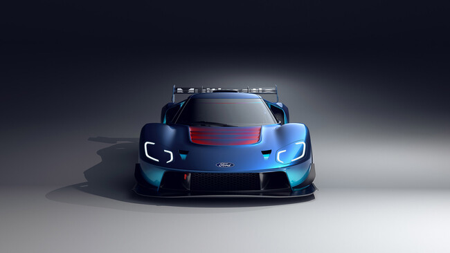
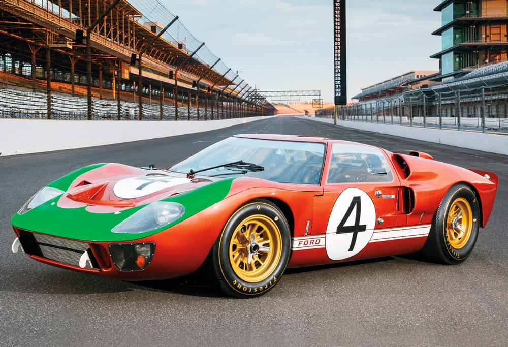

El Ford GT Mk IV 2023-2024 es la edición final y más extrema del superdeportivo, diseñada exclusivamente para circuitos. Con solo 67 unidades producidas, rinde homenaje al ganador de Le Mans de 1967, ofreciendo más de 800 hp, una carrocería de carbono "long-tail" y suspensión de competición, con un costo cercano a los $1.7 millones de dólares.


La historia del Ford GT es la metamorfosis de una venganza personal en una obra maestra de la ingeniería: nació en los años 60 como el GT40, un purasangre de motor V8 diseñado con el único fin de destronar a Ferrari en Le Mans; evolucionó en 2005 hacia un superdeportivo de calle con un enfoque analógico y robusto; y alcanzó su cúspide tecnológica con la generación de 2017, que priorizó la aerodinámica activa y el uso de un motor V6 EcoBoost altamente eficiente. Este linaje culmina con el Ford GT Mk IV de 2023, una bestia de circuito sin restricciones legales que eleva la potencia por encima de los 800 hp, utiliza una carrocería de fibra de carbono extendida y una suspensión de competición, cerrando así un ciclo de seis décadas donde la marca pasó de la fuerza bruta mecánica a la sofisticación digital extrema
